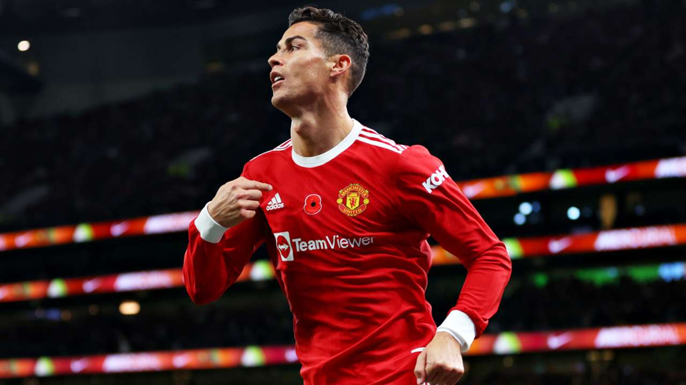
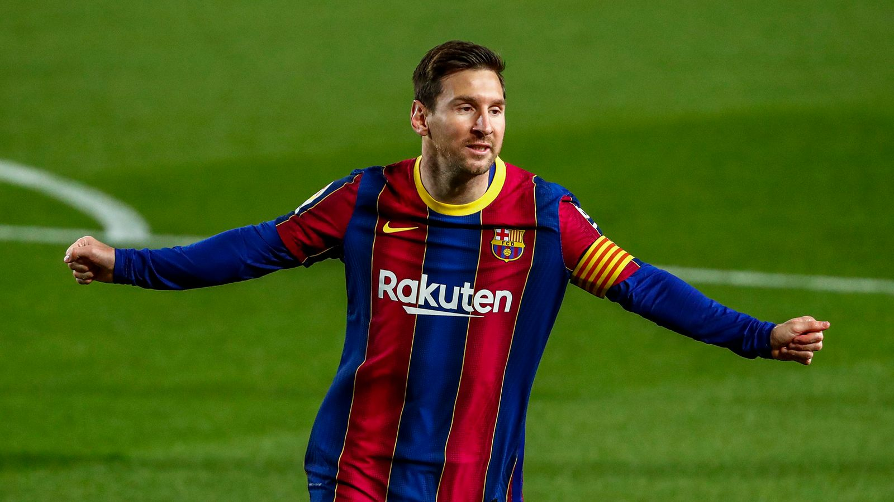
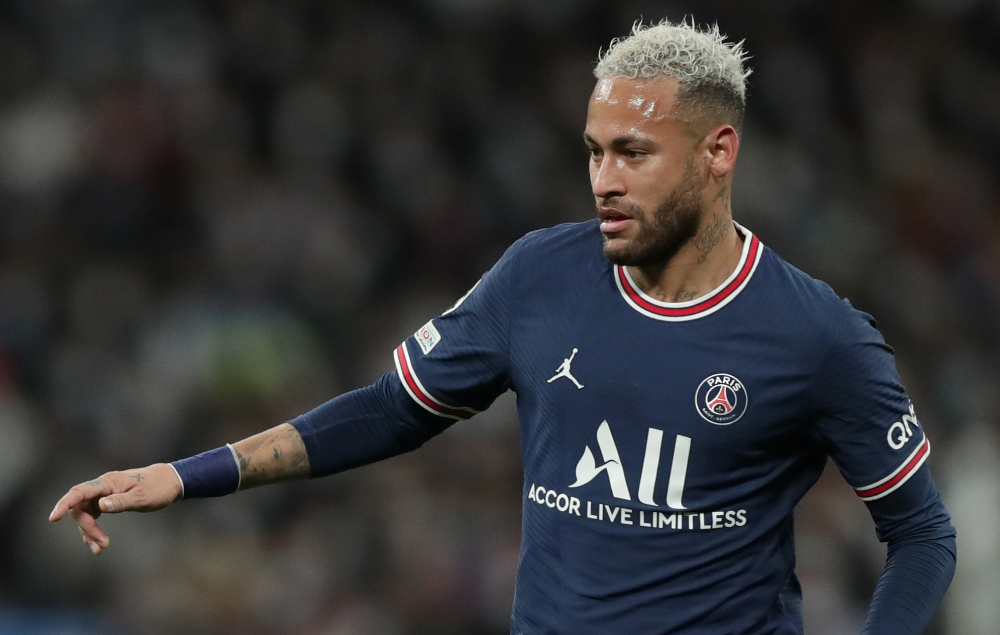
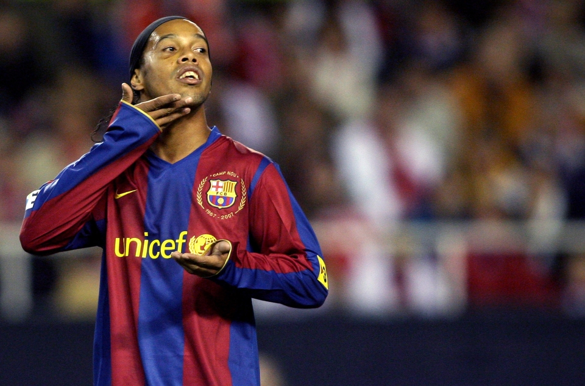

Famous Football Player
-Ved Asawa

Famous Football Players
Cristiano Ronaldo
Birthdate: 5 Feburary 1985 Lionel Messi
Birthdate: 24 June 1987 Know More
Neymar
Birthdate: 5 February 1992 Ronaldinho
Birthdate: 21 March 1980
Widely regarded as one of the greatest players of all time, Portuguese football player, Cristiano Ronaldo, is one of the world's highest-paid athletes. He is a versatile attacker capable of playing on either wing as well as through the center of the pitch. He has the distinction of being the first European to score 100 international goals.
Considered one of the best football players in the world and a prolific goal scorer, Lionel Messi has shattered and created numerous records in his playing career. Regarded by another soccer legend, Diego Maradona, as his successor, the Argentinian superstar is also one of the world’s highest paid athletes.
Amongst the best football players in the world presently, Neymar is a part of Brazil national team and French club Paris Saint-Germain. The prolific goal scorer debuted with Santos and played for Barcelona before joining PSG in a deal that made him the world’s most expensive player. He led Brazil national team to its first Olympic gold medal in 2016.
Regarded as one of the best football players of all time, Ronaldinho played a crucial role in Brazil’s victory in 2002 FIFA World Cup. Later, he helped FC Barcelona win two La Liga and a UEFA Champions League title. The two time FIFA world Player of the Year, who retired in 2018, was known for his technical skills and creativity.